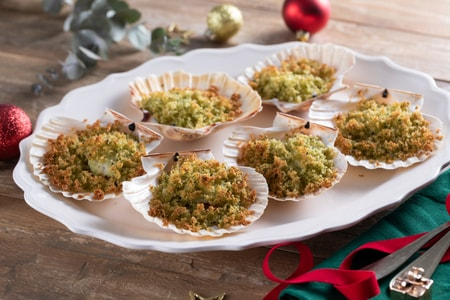

Home
Capesante Gratinate

Le capesante gratinate sono un antipasto perfetto per le feste, ideale anche per Capodanno:
una delicata e profumata panatura aromatizzata con timo,
maggiorana e prezzemolo impreziosisce questi raffinati frutti di mare,
una prelibata alternativa alle più comuni cozze gratinate.
Ingredienti
- Capesante
- Scorza di Limone
- Timo
- Olio Extravergine d'Oliva
- Pepe Nero
- Pane
- Prezzemolo
- Maggiorana
- Sale Fino
Preparazione
- Per realizzare le capesante gratinate, iniziate dalla panure: eliminate la crosta del pane (potrete utilizzarla per fare dei croccanti crostini) e tagliate la mollica a cubetti
- Trasferitela in un mixer, poi aggiungete l'olio , sale e pepe
- Unite anche le erbe aromatiche il prezzemolo, la maggiorana e il timo
- infine grattugiate la scorza di limone
- Frullate per ottenere un composto dalla consistenza grossolana
- con queste dosi la vostra panure sarà umida al punto giusto, in modo che il risultato sia gustoso e non troppo asciutto. Prendete le capesante, che avrete precedentemente sciacquato sotto l'acqua corrente, e adagiatele su una leccarda con la conchiglia rivolta verso il basso, poi farcitele con la panure ottenuta
- Cuocete in forno ventilato preriscaldato a 190° per circa 15 minuti o fino a quando si formerà un'invitante crosticina
- Le vostre capesante gratinate sono pronte per essere servite!